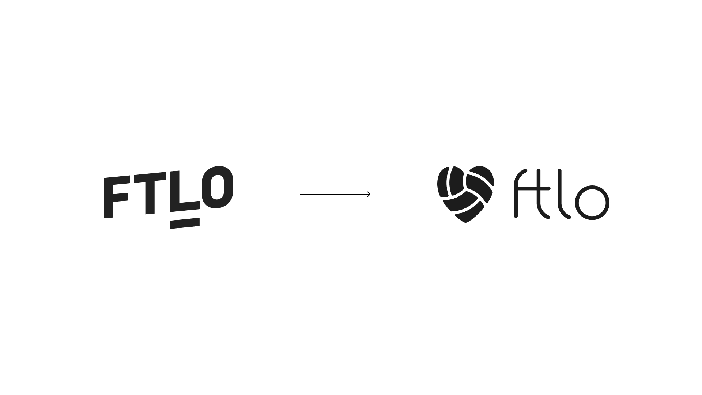
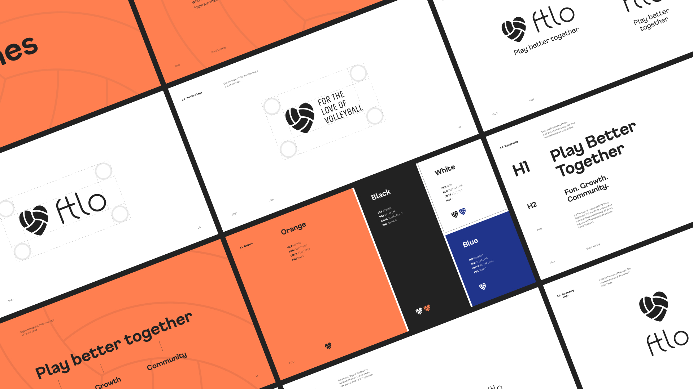
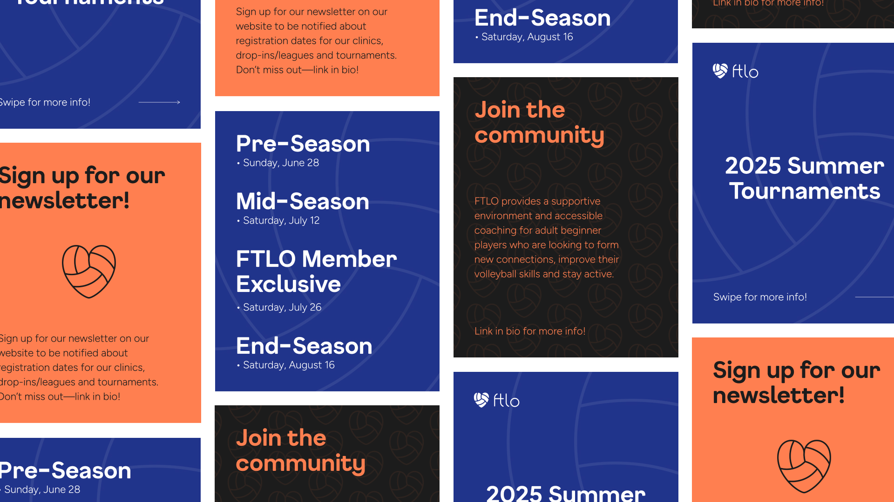
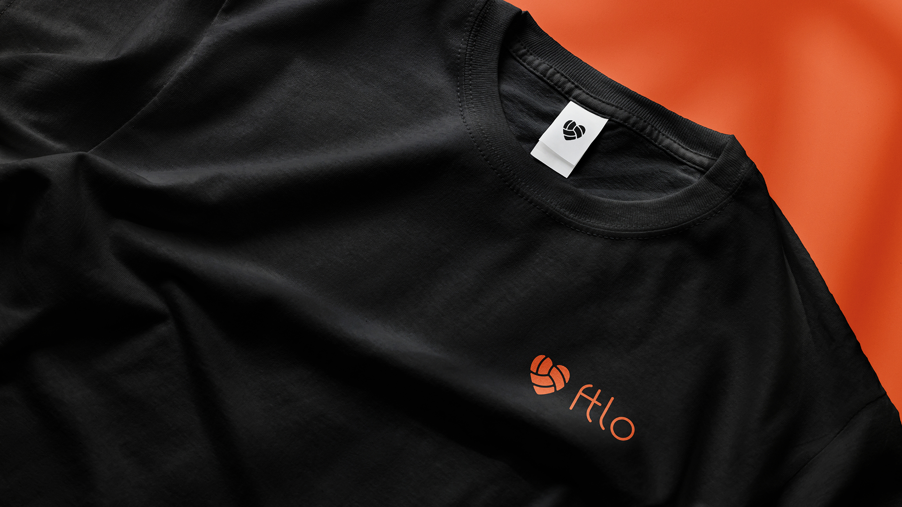
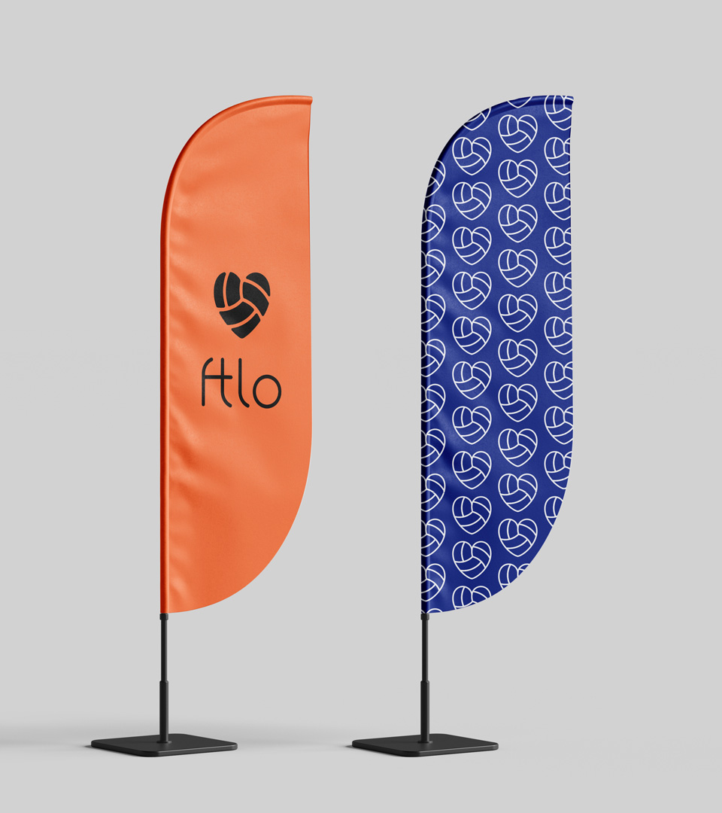
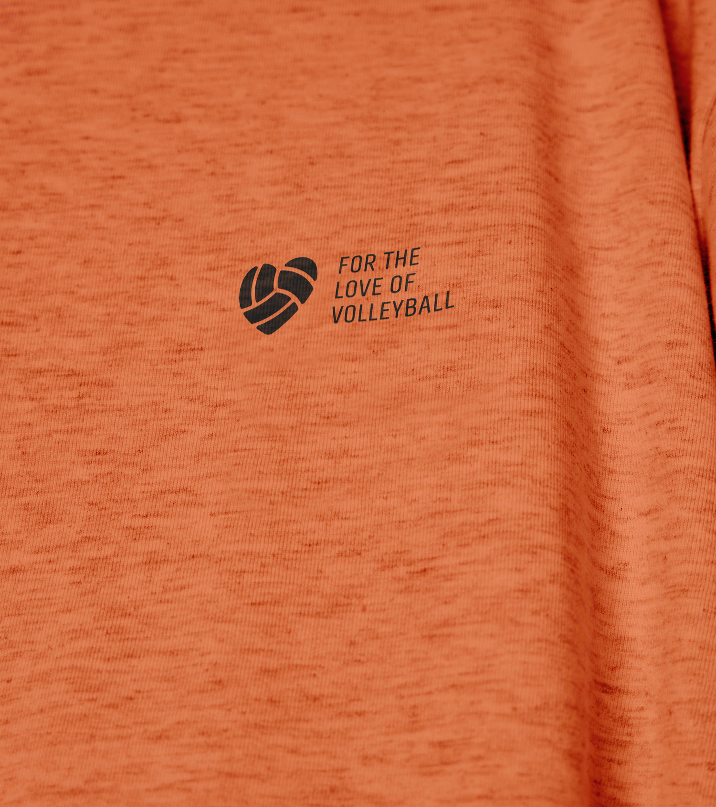

Ftlo
Branding
Ftlo (For the Love of Volleyball) provides volleyball group coaching for adults of all ages in the Lower Mainland who are new to volleyball, looking for an inclusive social community, and ways to stay active. This project aims to refresh the brand and visual identity of Ftlo, as it lacks distinction and doesn’t properly connect with the audience emotionally. The logo fails to embody the two most important things in Ftlo: volleyball and community.
Mentor

A heart/volleyball icon connects volleyball and community to the brand, which the previous logo was missing.






